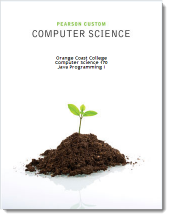

CS 170 Syllabus, Spring 2011

Hello, my name is Stephen Gilbert. Welcome to the CS 170, Java Programming I information page. Java Programming I is a transfer class for Computer Science (as well as some other science) majors. CS 170 is typically the first class in the Computer Science sequence, and is required if you intend to take advantage of the UCI SMART-ICS transfer program.
In Spring 2011, we'll again be offering three sections of CS 170; all three sections are fully on-campus classes. There are no hybrid or online sections this semester.
- Where and when is the course, and who's teaching?
- What does the course cover, and what do I need to know before I enroll?
- How can I successfully complete the course?
- What textbook and software will I need for the course?
- Course policies concerning attendance, late work, etc.
Who, Where, and When
Let's start with the where and when. All three sections of CS 170 meet in room 105 in the Clark Computing Center. (Map: building 73 in the upper-left corner, across from the softball field, by the Adams St. Parking lot.).
- CRN# 30530 meets on Monday through Thursday 11:10 AM to 12:20 PM
- CRN# 32865 meets on Tuesday and Thursday from 2:20 to 5:00 PM
- CRN# 31840 meets on Tuesday and Thursday from 6:00 to 8:40 PM
Instructor Contact Information
- Stephen Gilbert
- Office : Clark Computing Center F
- Office hours : M-TH: 12:30-1:30 PM
- Email : StephenGilbert@gmail.com or sgilbert@occ.cccd.edu
- Office phone : (714) 432-0202 ext 21173
- Home page : http://faculty.orangecoastcollege.edu/sgilbert/
What is CS 170 All about?
Here's the official course description from the (new 2011) OCC catalog:
A first Computer Science course taught using the Java programming language. Students will build console and graphical applications and applets. Emphasis will be placed on programming fundamentals such as variables, selection and loops as well as object-oriented programming concepts including classes, inheritance and polymorphism.
At OCC, CS 170 is one of the first courses in the Computer Science major for students who intend to transfer to a 4-year institution. This class will introduce you to the principles of Computer Science, using the Java programming language; it isn't a "Web programming class" like HTML or JavaScript.
Prerequisites
In this class, you will learn to write programs, but you won't learn how to use a computer. Before you enroll, read the following section, and make sure you feel you've mastered the skills I've listed here. There is no prerequisite for this course but I assume that you are "computer literate". In the context of this course, that means you know how to:
- Install and run programs on your computer
- Create and save plain text files using a text editor
- Copy, move, delete and find files and folders
- Browse the World Wide Web and use email.
If you don't feel comfortable doing these things, you should take either CIS 100 or CS 111, which are basic "computer literacy" courses. You don't have to have any previous programming experience.
Goals and Objectives
In this course you'll learn how to write computer programs, using the Java programming language. On successful completion of the course, you will be able to:
- Explain the Java programming model, particularly its support for object-oriented software development, and cite its strengths and weaknesses.
- Learn to use a variety of development tools for creating Java programs.
- Design and code Java programs, applets and applications, console and GUI programs, using Java's Swing and AWT class libraries.
- Read and understand the official Java documentation sufficiently well that it serves as a primary vehicle for further learning.
In addition, the class now has Student Learning Outcomes or SLOs. Students will be able to:
- Create, compile, execute, and test Java applications and applets.
- Create programs that correctly apply object-oriented programming techniques, including designing classes and methods, and implementing concepts of polymorphism and inheritance.
- Implement selection structures (if/else and switch), repetition structures (while, do/while, and for), and one- and two-dimensional arrays.
How can I succeed in CS 170?
Here's the information you need to succeed in CS 170. Below you'll find information about the course workload, the exams, quizzes, exercises, discussion, and homework, as well as information on how you'll be graded.
How much time will I have to spend on CS 170?
Everybody learns in different ways and at different speeds; in general though, you should plan on spending about two hours each week outside of class, for each class lecture hour, if you're an average student and want to receive an average (C-B) grade. For CS 170, that translates to about 8 hours a week, in addition to the five hours of class time. (It's 8 hours instead of 10 hours, because 1.75 hours a week is "lab" time.)
 If you're a good student or you're satisfied with a lower grade, you may
get by with less. If you have difficulty with the material, or if you want
to receive an A in the course, you'll probably have to spend more time.
If you're a good student or you're satisfied with a lower grade, you may
get by with less. If you have difficulty with the material, or if you want
to receive an A in the course, you'll probably have to spend more time.
Rather than trying to get your extra hours in by staying up all night every Saturday and Sunday, try to budget your time. Spend a couple hours every day, one hour reading the material, and one hour in the computer lab, or on your computer at home, working on problems. Remember, though, that this is college and it's up to you to remember your deadlines and to arrange your time appropriately.
It's very important that you don't fall behind, if you want to succeed. You can't "cram" for this class.
What exams and quizzes will I take?
There are both written exams and quizzes as well as hands-on skill demonstrations in this class:
- There is one written midterm, worth 15% of your grade and one written final, worth 25%. These exams will consist of multiple-choice questions from the reading and lecture. These are closed book exams.
- To help you practice for the midterm and final, there will be online reading quizzes that you will take outside of class using Blackboard Vista. These are designed to make sure you read the textbook and understand the lectures. These quizzes will have a relatively low point value (about 10% of your grade), but be worth enough to make sure you study for them.
- In addition to the written quizzes and exams, you will take 10 hands-on programming proficiency quizzes. These quizzes are each one-half hour long, focus on one particular programming concept or technique, and are worth 35% of your grade. These are designed as "mastery" quizzes. I expect all of you to get 100% on each of these exams. If you don't master the material the first time, you'll be given an opportunity to come in (outside of the regular class period) and retake up to 4 of the 10 quizzes.
All on-campus exams are closed-notes, closed book but I will supply you with a short Java syntax-summary sheet for use during the exams and the proficiency quizzes.
What about programming exercises, labs and homework?
 Learning to program is a lot like learning to play the tuba;
you'll never be any good unless you practice. To help you do
this, you'll spend most of your out of class time,
and a portion of each class period, writing programs.
Learning to program is a lot like learning to play the tuba;
you'll never be any good unless you practice. To help you do
this, you'll spend most of your out of class time,
and a portion of each class period, writing programs.
I'll assign several programming assignments for you to work on independently. Some of these will be short problems that you can do in a few minutes; most will take between fifteen minutes to a half hour. At least one problem each week should take you a couple of hours to complete.
You'll complete these assignments on your own computer. You'll be able to check your grade for each assignment and you'll be able to submit the assignments from your computer. These assignments (which will be worth 15% of your grade) will be graded for correctness. After the due date, I'll post a solution, (or go over the solution in class).
"Labs" and Hands-On Exercises
CS 170, as you know, is a lecture-lab class. Unlike in
Biology or Chemistry, where you have a separate lab period,
the CS 170 lab is integrated with the lecture.
 This has a couple of advantages, but the most important one is
that you get some hands-on experience right when we're
discussing a topic, instead of waiting until you try to
do your homework. That way, if you have any problems, you
have a chance to ask questions and correct your
misconceptions earlier, instead of later.
This has a couple of advantages, but the most important one is
that you get some hands-on experience right when we're
discussing a topic, instead of waiting until you try to
do your homework. That way, if you have any problems, you
have a chance to ask questions and correct your
misconceptions earlier, instead of later.
Class Participation
One of the greatest learning resources at your disposal are the other students you'll meet in this class. Take advantage of them; ask the person next to you to help you with something you don't understand, or offer to help someone else who is struggling.
To encourage you to help each other, I want you to use the online discussion area to ask all of your technical questions, instead of sending me an email message. Let's keep email for "personal" correspondence—things like "I'll be missing class this Tuesday", instead of questions like "Why do I get this error message when I compile?" If you ask these types of questions on the discussion board, you'll help all the other students who are having the same problem, but didn't think to ask. (I will answer questions posted on the discussion board, after I've given your fellow students an opportunity to respond. I also read all of the messages on the discussion board, even if I don't reply.)
I will post class announcements and general tips in the Announcements section in the online classroom. You should make sure you check regularly (at least a couple times a week) for new announcements.
How will I be graded?
You may take this course for a grade, or on a CR/NCR basis. If you take the course for credit/no-credit, you must obtain a score equivalent to a "C" to get credit. (If you're transferring, though, make sure that the institution you're transferring to will accept CR/NCR; most institutions won't if it's a requirement for your major.)
Grades will be assigned based on the following weights:
| Written Midterm Exam | 150 |
| Written Final Exam | 250 |
| Programming Proficiency Quizzes: 10 @ 35 | 350 |
| Reading Quizzes: 12 @ 7.5 | 90 |
| Homework Assignments | 190 |
| In-Class Lab Reports | 28 |
As you can see, this adds up to 1058 possible points you can earn; there is no extra-credit, makup-assignments, or curve. In lieu of that, you will be graded using 1000 as the maximum possible "base" points. Letter grades will be assigned using the following scale, based upon a maximum of 1000 points:
| Grade | Points |
|---|---|
| A | 900 |
| B | 725 |
| C | 550 |
| D | 450 |
| F | <450 |
I will also calculate your grades using a second formula that only includes your proficiency quizzes, midterm and final exams. I will use the same cutoff percentages (90%, 72.5%, 55% and 45%) to calculate this "test only" grade. I will use whichever grade is higher to calculate your final course grade. Notice that this method has no extra points associated with it.
What textbook and software will I need?
|
 |
Introduction to Java Programming CS 170 Custom Edition by Tony Gaddis ISBN: 9780558618063 This custom text is available in the OCC Bookstore for about $75. It includes 7 chapters from the 4th edition of Starting Out With Java: From Control Structures through Objects (ISBN: 978-0136080206). If you would rather have the complete text, you can purchase it from Amazon and other online booksellers. |
Many of you prefer to purchase a used book (or share a book with another student). You can even purchase an entirely different textbook if you like, provided that it covers the same material.
Software
All of the software you need to complete this course is installed on the computers in the OCC Clark Computing Center. However, many of you will want to work at home, especially if you are in the online section. Here is a short list of the software you'll need to install on your computer to complete the course. All of this software is free.
Java Software
You should have version 6 of the Java Runtime
Environment installed on your computer (if you want to do your
homework at home.) To get the software just go to
http://java.com,
click the "Download" button and follow the instructions.
IDE
This semester rather than switching between several different
development environments, we'll be using the
Dr. Java IDE the entire semester.
Dr. Java is a free, open-source program, written
in Java. It was developed and is maintained by the
PLT group at Rice University.
We use a special installation, customized especially for the Spring 2011 semester. I'll provide you with specific instructions for installing the program on your computer. You can install the software on a USB Thumb drive so that you can carry it with you from computer to computer, or, you can just carry our program files back and forth between your home computer or the OCC lab.
All of this software is installed on the machines in the Computing Center if you don't have a computer of your own.
What are the "rules" for this course?
Late Work
One of Murphy's laws says "if something can go wrong, it will". Try to keep this in mind as you plan your coursework. The network in the lab may be down, you may accidentally reformat your disk, you might have more difficulty with a problem than you expect, and, yes, your dog might even eat your homework. (I keep a set of student disks that my dog ate, just to remind myself that this is not always a fictitious excuse.)
Since all of these things can happen, you need to emulate the Boy Scouts, and "be prepared." The best preparation is to do your work early, not late, because I will not accept late work, period.
Istead of allowing you to turn in late work, I allow you to earn a certain amount of extra credit as "wiggle points" (58 in this class). That means, you could skip several quizzes or homework assignments, and still end up with an almost perfect score. Of course, if you do all of the assignments the extra points will be extra credit.
Attendance and Withdrawal
Quiz material is taken from the lecture and the online lessons, so it's important for you to complete the material. If you miss two or more classes, (especially at the beginning of the semester, when other students are trying to add the class), you may be dropped without notice.
Don't assume, though, that you will be automatically dropped if you fail to complete the material. It is your responsibility to withdraw from any class. If you stop attending, yet fail to withdraw, you will receive a grade of 'F'.
Also note that the exams will be given at the scheduled class period and time. There will be no makeup exams if you miss.
Please pay special attention to the OCC drop deadlines. Every semester I have students who want to drop the class after the deadline to drop has already passed. Those students end up getting an 'F' in the class if they are unable to complete the coursework. I do not give Incomplete grades.
Academic Honesty
Programming by its nature relies on learning from the work of others. You are encouraged to examine each other's code and to discuss various approaches and coding styles. You won't really learn anything, though, if you don't "try it yourself".
In this regard, discussing the general method used to solve a problem is certainly encouraged. Taking another student's source code and modifying it is really counter-productive; you learn to program by working out the programming exercises and assignments. If you don't do the assignments yourself, you won't learn how to program, and you won't be able to pass the programming exams.
When it comes to testing time, I expect you to maintain a high level of academic honesty. Cheating on exams will result in course failure. (While the quizzes are open book, you'll get the most out of them if you treat them as closed-book, like the exams.)
Disruptive Behavior
You are entitled to an environment that encourages learning, as are all your fellow students. You should not behave in a manner that negatively impacts other class members. In a classroom. In an online class, disruptive behavior includes "flaming" or harassing email, as well as posting offensive material on your class Web site.
I expect all of you to be polite, respectful, and helpful to your fellow students; in short, I expect you to act like adults should should act. If, in my judgment, your behavior negatively impacts the rest of the class, you may be subject to disciplinary action.
Disabilities
If you have a disability that may impede your ability to successfully complete this course, you should contact the Disabled Student's Center (432-5807 or 432-5604 TDD) not later than the first week of the course. Their staff will assist you in arranging accommodations that can help you meet course requirements.
Reservation of Rights
I reserve the right to change this syllabus, including, without limitation, these policies, without prior notice.